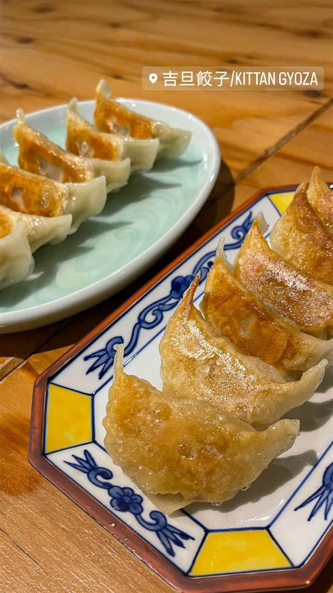

吉旦餃子（KITTAN GYOZA）
昆布だしで炊いたキャベツを一晩寝かせる、贈りたくなる焼き餃子
吉旦餃子/KITTAN GYOZA
2020年に中目黒で開業した手作り餃子専門店。キャベツを昆布だしで炊いてから餡を仕込み、一晩寝かせるなど手間をかけた焼き餃子を、カフェのようなおしゃれな空間で楽しめる。
TRIVIA
豆知識
- 「贈りたくなる餃子」がコンセプトで、見た目も含めギフト感のある一皿を目指している
- 東急ストア中目黒本店でポップアップ販売も行われたことがある
REVIEWS
世間の評判
3.40食べログ
手包み餃子の食べ比べセット
- 手包みにこだわった餃子の食べ比べセットを評価する声が多い
- カフェのようなおしゃれで清潔感ある店内を評価する声が多い
- 一人でも入りやすい雰囲気という声がある
食べログ 口コミ385件
| 創業 | 2020年7月開業（運営会社の株式会社吉旦は2020年2月設立） |
|---|---|
| 看板 | 吉旦餃子（キャベツベースにブラックペッパーを効かせた焼き餃子、1個390円） |
| こだわり | キャベツをしっかり塩もみ・脱水した後、昆布だしで炊いて香りを引き出し、餡を卵でコーティングして旨味を閉じ込め、一晩寝かせて素材の力を最大限引き出す。皮から一つひとつ手包み |
| どこから | 都心 |
| 営業時間 | 月〜木 12:00-15:00、17:00-22:00 金・土 12:00-15:00、17:00-23:00 日 12:00-15:00、17:00-22:00 |
| 予算 | 昼 ¥1,000～¥1,999 夜 ¥3,000～¥3,999 |
| 定休日 | 無休 |
| 予約 | 予約可 |
| 場所 | 中目黒駅 東京都目黒区上目黒1-6-7 Ifis中目黒 |
| メモ | 中目黒駅から徒歩2分。カフェのようなおしゃれな空間で餃子を楽しめる。冷凍餃子の通販も展開 |
食べたもの：焼き餃子
OFFICIAL
店からの知らせ
その日の限定や臨時の休みは、店のInstagramに出ます。
NEARBY
近い店・同じ系統の店
-
 ★
焼肉 中目黒駅
びーふてい 中目黒店
1988年創業、和牛一頭買いで味わう名物ガツン焼き
夜 ¥6,000～¥7,999
★
焼肉 中目黒駅
びーふてい 中目黒店
1988年創業、和牛一頭買いで味わう名物ガツン焼き
夜 ¥6,000～¥7,999
-
 ★
焼肉 中目黒
小野田商店
中目黒の路地裏、七輪で焼く500円前後のホルモン
夜 ¥3,000～¥3,999
★
焼肉 中目黒
小野田商店
中目黒の路地裏、七輪で焼く500円前後のホルモン
夜 ¥3,000～¥3,999
-
 ピザ 中目黒駅
聖林館（セイリンカン）
マルゲリータとマリナーラの2種のみ、国産小麦を長期熟成
昼 ¥4,000～¥4,999 夜 ¥4,000～¥4,999
ピザ 中目黒駅
聖林館（セイリンカン）
マルゲリータとマリナーラの2種のみ、国産小麦を長期熟成
昼 ¥4,000～¥4,999 夜 ¥4,000～¥4,999
-
 ピザ 中目黒駅
ピッツエリア エ トラットリア ダ・イーサ（Pizzeria e trattoria da ISA）
世界ピッツァ選手権優勝のナポリピッツァ職人が焼くマルゲリータ
昼 ¥2,000～¥2,999 夜 ¥3,000～¥3,999
ピザ 中目黒駅
ピッツエリア エ トラットリア ダ・イーサ（Pizzeria e trattoria da ISA）
世界ピッツァ選手権優勝のナポリピッツァ職人が焼くマルゲリータ
昼 ¥2,000～¥2,999 夜 ¥3,000～¥3,999
-
 イタリアン 中目黒駅
関谷スパゲティ
真空圧縮で気泡を抜いた自家製極太麺のナポリタンが730円均一
昼 ～¥999 夜 ～¥999
イタリアン 中目黒駅
関谷スパゲティ
真空圧縮で気泡を抜いた自家製極太麺のナポリタンが730円均一
昼 ～¥999 夜 ～¥999
-
 パスタ 中目黒駅
中目黒 ピッツェリア8
350℃の石窯で焼く本格ナポリピッツァと自家製生パスタ
昼 ¥1,000～¥1,999 夜 ¥3,000～¥3,999
パスタ 中目黒駅
中目黒 ピッツェリア8
350℃の石窯で焼く本格ナポリピッツァと自家製生パスタ
昼 ¥1,000～¥1,999 夜 ¥3,000～¥3,999
ONSEN & SAUNA